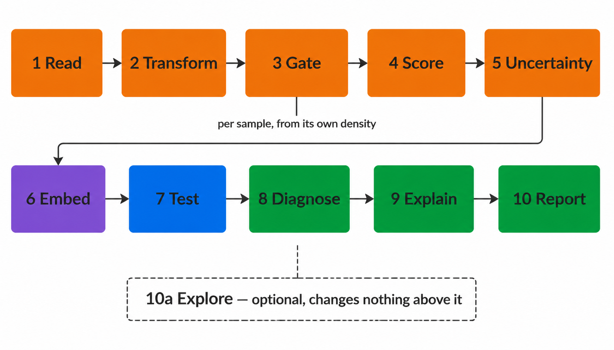

What the pipeline does, stage by stage, with the function implementing each. One call runs all ten; every stage is also an exported function callable on its own, so a step can be inspected or replaced without forking the package.
One constraint governs the design and is stated before the stages.
The unit of replication is the donor, not the event.
Event counts are set by acquisition duration rather than by study design. Inference over events sets the degrees of freedom from instrument time and allows one deeply acquired donor to determine a group result. Every test aggregates to one value per sample before estimation. Quantities that cannot be aggregated are reported with effect sizes and no p-value.

1 Read
read_fcs_resolved() resolves channels to marker symbols
from $PnS with fallback to $PnN, and applies
the acquisition spillover matrix where the file carries one. Spectral
instruments write unmixed data with no matrix, so
maybe_compensate() detects and reports rather than
assuming; applying compensation twice is as damaging as omitting it.
2 Transform
set.seed(42)
ex <- matrix(abs(rnorm(20000 * 4, 0, 250)), ncol = 4,
dimnames = list(NULL, c("CD3", "CD4", "CD8", "CD19")))
cf <- derive_cofactor(ex, setNames(1:4, colnames(ex)))
round(as.numeric(cf), 1)#> [1] 157.2The arcsinh cofactor governs the width of the quasi-linear region
near zero. The conventional value of 5 derives from mass cytometry and
over-expands the background band on spectrally unmixed fluorescence
data. Each marker is bisected until the interquartile range of its
background distribution reaches a target, and the panel adopts the
median. derive_cofactor_pooled() estimates across samples
so that a single weakly stained file does not set the scale on which
every threshold in the run is computed.
3 Gate
x <- c(rnorm(8000, 0, 0.4), rnorm(2000, 4, 0.5)) # bimodal marker
round(density_valley(x), 2)#> [1] 1.52Thresholds are placed at the density minimum within each sample.
density_valley() returns NA for unimodal
distributions, after which resolve_threshold() attempts a
declared unstained control and falls back to a flagged quantile.
Derivation is recorded per threshold in
thresholds_used.csv.
Per-sample thresholding accommodates staining variation but permits
the definition of a population to differ between groups, which
stats_threshold_drift() exists to detect.
4 Score
str(default_population_spec()[["CD3 pos CD4 pos"]])#> List of 2
#> $ CD3: chr "above"
#> $ CD4: chr "above"Populations are evaluated as Boolean conjunctions of marker directions read from YAML. Editing the specification changes the analysis without modifying R code.
5 Quantify the uncertainty
u <- threshold_uncertainty(x_parent, source = "valley", B = 100)
c(u$u_sampling, u$u_method, u$u_combined)Each cut is re-derived from resamples of its own events, and again across the settings that placed it. The two spreads combine in quadrature and propagate to every population reading that marker, alongside the CD45 parent term, which enters all of them because it fixes the denominator.
The reported threshold is unchanged: the perturbation runs on copies.
Every entry point saves and restores .Random.seed, so the
cell selection in the next stage draws from the same stream position
whether this runs or not.
6 Embed
emb <- run_umap(mat, n_neighbors = 30, min_dist = 0.3, seed = 42)select_umap_features() excludes scatter, viability, time
and the height and width duplicates of area channels; retaining these
was the principal cause of uninformative embeddings in the precursor
implementation. plan_subsample() draws equal cell numbers
per sample so that acquisition depth does not determine the
manifold.
ret_model = TRUE retains the model for projection of
later batches through project_umap(), which holds
coordinates fixed between runs. Model retention alters the embedding;
see ?run_umap.
7 Test
freq <- data.frame(
sample_id = rep(sprintf("S%02d", 1:12), each = 2),
population = rep(c("CD4 T cells", "B cells"), 12),
pct_of_cd45_pos = c(rbind(rnorm(12, 25, 4), rnorm(12, 10, 2))),
is_control = FALSE, qc_status = "pass")
grp <- setNames(rep(c("HC", "Patient"), each = 12)[1:12], sprintf("S%02d", 1:12))
res <- stats_group_comparison(freq, grp, reference = "HC")
res[, c("population", "comparison_group", "n_reference", "cliffs_delta", "p_value")]#> NULLstats_marker_state() applies the same treatment to
marker expression within a population, testing median intensity and
percent positive separately because a shift confined to a subset moves
one and not the other.
8 Diagnose
Six outputs constrain interpretation of the preceding stages: threshold drift, gate and counting uncertainty, phenotype concordance, gate against cluster concordance, learned gate geometry, and conformance against a baseline. The diagnostics article covers each in full.
batch_mixing_report() quantifies batch structure in the
embedding against a permutation null and reports Cramér’s V
between batch and group. Correction through --correct-batch
is refused above a configurable V, where batch and biological
effect are not separable.
stats_threshold_drift() tests whether marker thresholds
separate by group, which would render an abundance difference partly
definitional.
stats_confounding() reports whether a covariate both
differs across groups and associates with the outcome, the two
conditions jointly defining a confounder.
cluster_gate_agreement() cross-tabulates declared labels
against unsupervised clusters and is the only output capable of
identifying a population absent from the specification, or a threshold
rejecting events that belong to its population.
run_gate_uncertainty() reports how far each threshold
moves under resampling and propagates that to every population reading
it, so a difference smaller than its own gate’s movement is identifiable
as such.
9 Explain
cluster_gate_agreement() identifies a cluster matching
no declared population but cannot characterise it, leaving a cluster
index and a cell count.
explain_cluster() inverts the gating stage. Given
labelled events it selects the two most discriminating markers, fits a
convex polygon in that plane, retains the enclosed events and recurses,
producing the topology of a manual gating strategy.
st <- explain_cluster(marker_matrix, cluster_id == 7)
st$summary # marker pair and metrics per level
st$levels[[1]]$polygon # vertices, in arcsinh unitsConvex polygons rather than thresholds: a conjunction of
one-dimensional cuts is an axis-aligned rectangle, and an oblique
boundary constrained to a rectangle must admit contaminants or exclude
genuine events. derive_singlet_band() is a hand-written
instance of the same geometry.
Metrics are computed on held-out events with the resubstitution value alongside, since eight free half-planes can memorise a few thousand events. The stage is descriptive: it carries no p-value and scored frequencies are identical whether it runs or not.
--external-labels supplies the labels from elsewhere, a
cyCONDOR clustering for instance, and
gate_transferability() then refits the strategy with one
donor withheld and scores it on that donor. Held-out events come from
the same donors and overstate how well a gate travels; the per-donor
minimum does not. --export-gates writes the result as
Gating-ML 2.0 in the units the FCS file stores.
10 Report
Figures, tables, and write_run_manifest(), which records
R version, package versions, git commit and working-tree state, the full
invocation, and every input file with size and modification time. The
manifest is written before the expensive stages and rewritten at
completion, so an interrupted run records
status: failed.
10a Explore
--explore runs a second, independent analysis over every
event and every eligible channel, writing to
<outdir>/explore/ and leaving stages 1 to 10
untouched. It has its own quality gate, its own embedding and
clustering, and its own self-contained report.
--explore-only runs it without stages 2 to 10 at all. See
Explore mode.
Further reading
- Running cyRAVEN, for every command and option.
- Inputs, for the sample sheet and the config.
- Gating, for threshold derivation and specification syntax.
- Diagnostics, for the outputs that falsify a specification.
- Statistics, for test selection and its assumptions.